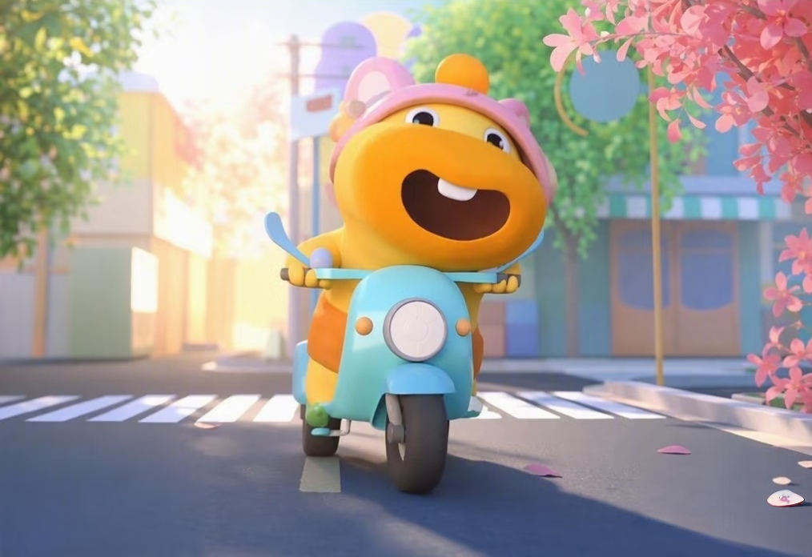

萌宠—水豚噜噜
当全网都在为“精神稳定”发疯时，水豚噜噜凭实力躺赢——毕竟谁能拒绝这只自带松弛感的行走糯米团子？这只爆火表情包的原型，是动物界公认的“老好人”，主打一个“鼠鼠我啊，这辈子没脾气”。
噜噜标志性的圆脸蛋和下垂嘴角，仿佛写满“已黑化(但电量不足)”，任谁看了都会心软地喊一句“有事吗？”。遇到动物打架围观，别的动物抢食避让，主打一个“宇宙的尽头是躺平”，就连鳄鱼从身边路过，它都能淡定贴贴，江湖人称“动物界社交天花板”。
现在噜噜的表情包已经攻占朋友圈：开会摸鱼发它，是“带薪冥想”；在无声抗议；被甲方折磨它，秒变“毁灭吧，累了”的精神写照。从早八人的困顿到深夜emo，这只水豚用它的“没睡醒脸”治愈全网，堪称行走的反内卷代言人。毕竟在噜噜的世界里，连呼吸都是慢动作——主打一个，世界纷纷扰扰，我自岁月静好。